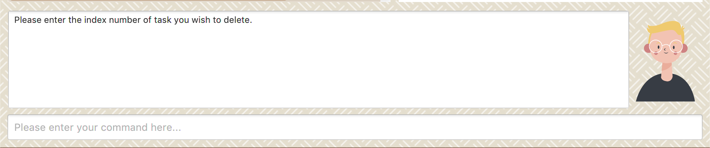
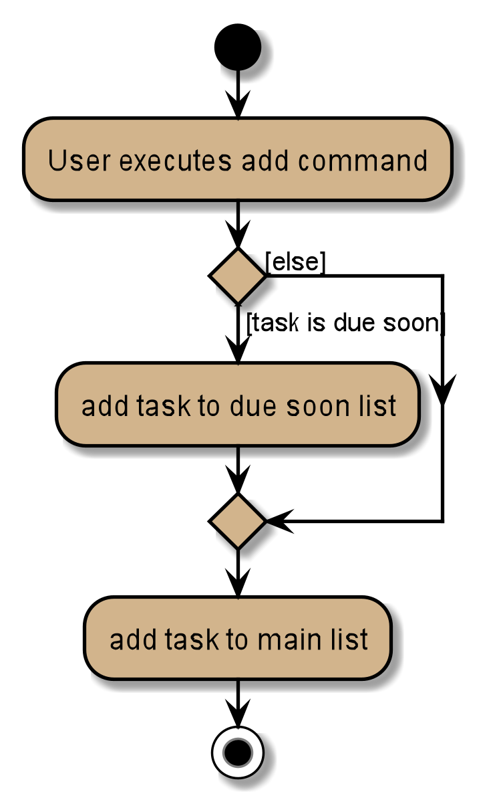
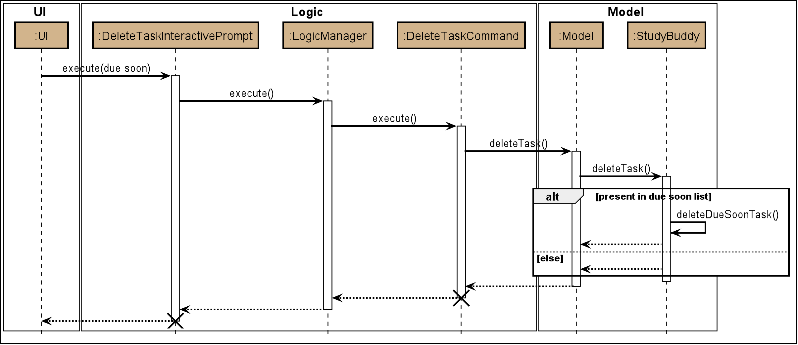

Soumwyaa Sabarinathann - Project Portfolio
Project: Study Buddy
Overview
StudyBuddy is a desktop application designed for students who wish to manage their module related tasks in a convenient and user-friendly interface. The application is written in Java and spans over 12k lines of code.
Summary of contributions
-
Major enhancement: added the Due Soon List feature
-
Function: It allows users to view a list of tasks due within the next week in one panel. It also displays time left before the deadline for each due soon task, auto-sorts tasks to be in order of most urgent to least urgent deadline and auto-updates when changes are made to the data (additions, deletions, edits etc).
It also provides a refresh command that is used to update the due soon list so it doesn’t become invalid after a certain duration of time. -
Justification: Helpful to the user because it reminds them of upcoming deadlines.
-
Highlights: This implementation was challenging because it required changes to be made to every command that changed data. It involved working in the logic, model, storage and UI components of the code base. It also involved changing the GUI.
-
-
Major enhancement: added the Add Duplicate Tasks feature
-
Function: It allows users to add duplicate tasks by automatically appending brackets with a number to its task name. The number corresponds to the number of times task has been duplicated.
-
Justification: If the user makes a mistake in one field while adding task, they will have to re-enter all 12 fields if duplicates are not allowed.
-
Highlights: It required working on other commands, such as edit command and unarchive command to prevent duplication. Since study buddy already had a lot of checks to prevent duplicate tasks, it required a large amount of refactoring code.
-
-
Minor enhancement: added the Delete Task command
-
Function: Allows user to delete an existing task in the list
-
Justification: Helpful to the user because it enables them to remove tasks from their list.
-
-
Minor enhancement: added the Filter command
-
Function: Allows user to filter by status (eg: finished, pending etc) or by type (eg: assignment, quiz etc)
-
Justification: This feature is extremely helpful to the user because it enables them to filter their list of all tasks by various categories.
-
Team-based Tasks
1. Refactored all occurrences of Address Book to Study Buddy. Link to Pull Request #135
2. Helped to maintain the issue tracker. Links to issues #283, #268.
3. Attempted to find bugs in all team members code to help them fix any issues. Links to issues #107, #256
4. Wrote test cases for error-prone classes, even if they were not mine. Links to Pull Requests #166, #139
5. Contributed to the forum. Link to issue #75
Review/Mentoring
1. Reviewed other members Pull Requests. Links to Pull Requests #59, #279
2. Reviewed another team’s DG and provided useful feedback. Links to issues #208, #204
User guide
Given below is a section that I contributed to the User Guide. It showcases my ability to write documentation targeting end-users. |
Delete
(Contributed by Souwmyaa)
This commands deletes a task from the existing list, using the index provided by you. Index simply refers to the number on the left of the task in the All Tasks panel.
| Once a task is deleted, it cannot be retrieved. Use this command with caution! |
Example:
After having added a task, you realise that there has been a change and you do not need to do that task anymore.
Study Buddy provides you an option to delete that task from the list!
To delete:
-
Initiate the command using keyword
delete -
Study Buddy should respond with:
Figure 1. Response to 'delete' -
Type the index of the task you want to delete. In this case, the index entered is 1.
 Figure 2. Asks for confirmation
Figure 2. Asks for confirmation -
Press enter again to confirm
-
Task has been deleted! You will notice that the task at the index you selected has disappeared from the list of tasks.
 Figure 3. Updated All Tasks Panel
Figure 3. Updated All Tasks Panel
Developer Guide
Given below are some sections I contributed to the Developer Guide. They showcase my ability to write technical documentation and the technical depth of my contributions to the project. |
Due Soon Tasks Feature
Implementation
The Due Soon Tasks feature allows users to view the tasks that have deadlines within the next week.
This feature is implemented using a panel on the main window with a list of tasks Due Soon that is updated with every command that may affect Due Soon task list (such as add, delete or archive).
Some situations that trigger due soon feature are:
-
When user enters a task:
-
What it does:
-
When a task that is added to the main list, is due within the next week, it is automatically added to the list of due soon tasks.
-
The list is automatically sorted to be in increasing order of deadlines.
-
The time left for the deadline is also added.
Figure 4. Activity Diagram for Add to Due Soon list{bl}
-
-
Details:
-
The add command when entered by the user, triggers the creation of an object of the InteractivePrompt class (in this case AddTaskInteractivePrompt).
-
In the AddTaskInteractivePrompt class, the data entered by user is parsed.
-
If there are no errors, the AddTaskCommand object is created which triggers the addTask() function in Model.
-
This function in turns calls addTask() function in Study Buddy.
-
This function calls the isDueSoon() function in Task to confirm if the task belong to the due soon list.
-
If it does, it is added to due soon list and main list, and the due soon list is sorted. Else, it is simply added to the main list.
Figure 5. Sequence Diagram for Add to Due Soon list{bl}
The lifeline for every member should end at the destroy marker (X) but due to a limitation of PlantUML, the lifeline reaches the end of diagram. {bl}
-
-
-
When user deletes a task:
-
What it does:
-
When a task that is deleted from the main list occurs in the due soon list as well, it is automatically deleted.
 Figure 6. Activity Diagram for Delete from Due Soon list
Figure 6. Activity Diagram for Delete from Due Soon list{bl}
-
-
Details:
-
The delete command when entered by the user, triggers the creation of an object of the InteractivePrompt class (in this case DeleteTaskInteractivePrompt).
-
In the DeleteTaskInteractivePrompt class, the data entered by user is parsed.
-
If there are no errors, the DeleteTaskCommand object is created which triggers the deleteTask() function in Model.
-
This function in turns calls removeTask() function in Study Buddy.
-
removeTask() calls the updateDeleteDueSoon() function in StudyBuddy which checks if the task exists in the due soon list.
-
If it does, it is deleted from the due soon list and main list. Else, it is simply deleted from the main list.
Figure 7. Sequence Diagram for Delete from Due Soon list{bl}
The lifeline for every member should end at the destroy marker (X) but due to a limitation of PlantUML, the lifeline reaches the end of diagram.
-
-
| Other commands like edit, archive etc also trigger due soon feature in a similar manner. |
-
When user refreshes due soon list:
-
What it does:
-
Refreshes the list of due soon tasks and status tags. This command is useful for a situation where due soon list is not up to date due to a drastic change in time.
 Figure 8. Activity diagram for refresh
Figure 8. Activity diagram for refresh{bl}
-
-
Details:
-
The refresh command when entered by the user, triggers the creation of an object of the InteractivePrompt class (in this case RefreshTaskInteractivePrompt).
-
In the RefreshTaskInteractivePrompt class, the data entered by user is parsed.
-
If there are no errors, the RefreshCommand object is created which clears the due soon list and then, iterates through the main list and calls addDueSoonTask() in Model, for any tasks that are due soon.
 Figure 9. Sequence diagram for refresh
Figure 9. Sequence diagram for refresh{bl}
The lifeline for every member should end at the destroy marker (X) but due to a limitation of PlantUML, the lifeline reaches the end of diagram.
-
-
-
When the application launches:
-
What it does:
-
It loads the due soon tasks into a panel by filtering tasks that are due soon from the main list.
-
This is necessary, because old list of due soon tasks may not be up-to-date.
-
-
Details:
-
The addTask() function in StudyBuddy class already checks if task is due soon and adds to due soon list (as mentioned above).
-
While all tasks are being added to their respective lists in JsonSerializableStudyBuddy class, the due soon list gets automatically updated.
-
-
| Calculation of time left for deadline and check for if task is due soon can be found in the Task class. ==== Design Considerations |
Aspect: How refresh command works
-
Alternative 1 (current choice): Clear and reload the due soon task list.
-
Pros: Less prone to errors since the entire list is "refreshed".
-
Cons: More operation intensive.
-
-
Alternative 2: Does not clear and reload the due soon task list.
-
Pros: Fewer operations need to be performed.
-
Cons: May have be more prone to errors because list is not completely "refreshed". Some parts of it are the same.
-